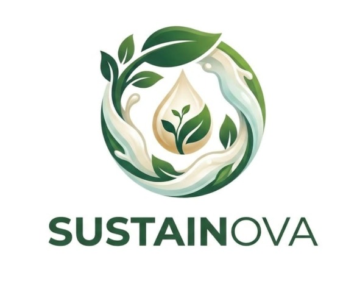
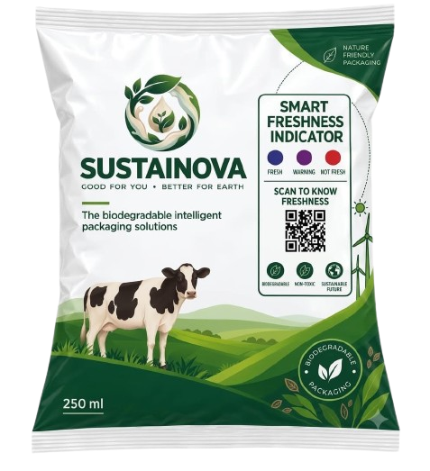

01 / MATERIAL
✦
A pouch with a softer footprint.
Our concept explores a biodegradable film based on PVA + pectin + xanthan — an alternative direction to persistent LDPE packaging.
biodegradable concept↗

SMARTFRESHA better pouch for a better everyday ritual. SmartFresh pairs a biodegradable milk pack with a natural colour-changing freshness indicator — then lets your phone read the story.

We are rethinking the milk pack from the material it is made of to the information it gives back. SmartFresh connects a physical colour response to a clear digital decision.
Our concept explores a biodegradable film based on PVA + pectin + xanthan — an alternative direction to persistent LDPE packaging.
A cabbage-derived anthocyanin indicator shifts from deep bluish-purple toward pink and red as deterioration progresses.
Scan the QR code, capture the indicator, and let image analysis translate an experimental colour category into a consumer-friendly status.
Open the SmartFresh web app from the QR code printed on the pouch.
Use your camera or upload a clear image of the freshness indicator.
Colour extraction compares the image with our experimental categories.
Get a calm, simple status that helps you decide what to do next.
This is a working prototype of the image-analysis experience. Pick a calibrated colour or upload an indicator image to see how the interface interprets it.
The indicator is in the deep bluish-purple range. The pack is reading as fresh in this prototype calibration.
Remember: SmartFresh is an information layer. Keep milk chilled, check the seal, and use your senses before consuming.
This prototype compares extracted colour against experimentally established categories — it is not a food-safety certification.
READ THE SCIENCE ↗Scan the pouch QR code to connect its physical identity to a simple record. For this SIH prototype, try the sample batch below.
local dairy pilot · Pune region
SmartFresh is designed around one joined-up idea: responsible production should continue into responsible consumption.
Explore biodegradable packaging to reduce dependence on persistent plastic.
ProductionGive consumers an additional visual and digital cue instead of relying only on a date.
ConsumptionDesign for a more thoughtful end-of-life, with sustainability considered from the start.
DisposalSmartFresh brings a little more clarity to the everyday things we trust.
Back to the top ↑